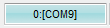
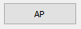
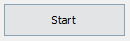

Instalar stock Original de Fábrica Android 6.0.1 Marshmallow para o Galaxy S6 EDGE SM-G925I

Procedimento de reinstalação de firmware, disponivel para o dispositivo Galaxy S6 EDGE SM-G925I, voltando a versão original do sistema de forma rápida e sem nenhuma complicação. Com isso, problemas como: "Incapacidade de iniciar - Loop infinito, Travamentos, lentidões, Vírus - aplicativos instalam automaticamente - Propagandas excessivas, custom-recovery's" e vários outros não irão mas o pertubarem.
# Amigo(a), nós do SO. IN ROMS não nos responsabilizamos por qualquer eventual erro ou dano que possa vir a ocorrer em seu dispositivo, por isso, siga por sua conta e risco! Para maiores informações queira clicar AQUI
Para esse tutorial você irá prescisar do
Odin3 Firmware para o Galaxy S6 EDGE SM-G925I DriversA coversa está boa mas o que é bom mesmo é o tutorial, então, vamos lá!
- Você deve baixar os 3 arquivos listados acima, no seu pc extraia os arquivos "www.soinroms.com -G_S6_EDGE_SM-G925I_a6.0rar", "Odin3_v3.10.6_w...zip" e instale os drivers USB.
- Vamos utilizar o programa odin para realizar a instalação da firmware, então vá no diretório onde foi realizado a extração e o abra.
- Após abrir o programa Odin vamos partir para o telefone.
- - Desligue o aparelho.
- Pressione ao mesmo tempo as teclas HOME, VOL - e POWER e solte a tecla POWER quando a tela de Download aparecer.
- Agora pressione a tecla de VOL + para confirmar.
- Conecte o S6 EDGE ao pc, note que no programa Odin a porta ID:COM ficará  AZUL indicando que o dispositivo foi reconhecido.
- No odin clique em  e abra a pasta que acabamos de extrair então escolha o arquivo: "G925IDVS3EPF6_G925IZTO3EPE5_G925IDVU3EPF6_HOME.tar.md5"
- É normal que o programa paralise alguns segundos então não se preocupe.
- Assim que o arquivo for carregado clique em  para dar inicio ao Flash.
- O processo de Flashing durará entre 5 à 7 minutos então relaxe e aguarde.
- Após tudo isso o dispositivo irá reiniciar, enquanto o mesmo não inicia ouça um pouco de Katy Perry :).
- Para finalizarmos, recomendamos que faça um procedimento de Hard reset para que assim todas as funcionalidades funcionem bem. Se você não sabe como realiza-lo, clique Aqui para prosseguir.
No PC
No Celular
Ficou com alguma dúvida? Obteve erro em algum dos procedimentos? Então fique livre a deixar seus comentários logo abaixo.